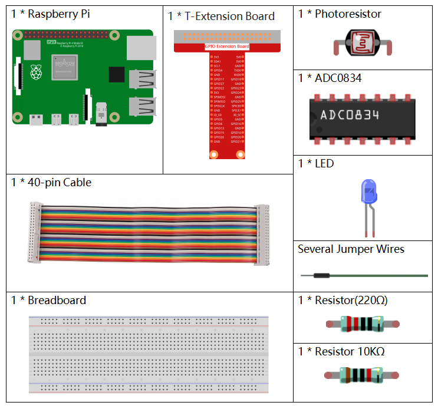
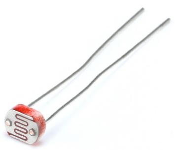

Note
Bonjour, bienvenue dans la communauté Facebook des passionnés de SunFounder Raspberry Pi & Arduino & ESP32 ! Plongez plus profondément dans l’univers des Raspberry Pi, Arduino et ESP32 avec d’autres passionnés.
Pourquoi rejoindre ?
Support d’experts : Résolvez les problèmes après-vente et les défis techniques avec l’aide de notre communauté et de notre équipe.
Apprendre et partager : Échangez des astuces et des tutoriels pour améliorer vos compétences.
Aperçus exclusifs : Accédez en avant-première aux annonces de nouveaux produits et aux aperçus.
Réductions spéciales : Profitez de réductions exclusives sur nos derniers produits.
Promotions festives et cadeaux : Participez à des tirages au sort et des promotions spéciales pendant les fêtes.
👉 Prêt à explorer et à créer avec nous ? Cliquez sur [Ici] et rejoignez-nous dès aujourd’hui !
2.2.1 Photoresistor
Introduction
La photoresistance est un composant couramment utilisé pour mesurer l’intensité lumineuse ambiante dans la vie quotidienne. Elle aide le contrôleur à reconnaître le jour et la nuit et à réaliser des fonctions de contrôle de la lumière, comme les lampes nocturnes. Ce projet est très similaire au potentiomètre, mais au lieu de changer la tension, il permet de détecter la lumière.
Composants
Principe
Une photoresistance, ou cellule photoélectrique, est une résistance variable contrôlée par la lumière. La résistance d’une photoresistance diminue à mesure que l’intensité lumineuse incidente augmente ; en d’autres termes, elle présente une photoconductivité. Une photoresistance peut être utilisée dans des circuits détecteurs sensibles à la lumière, ainsi que dans des circuits de commutation activés par la lumière ou l’obscurité.
{kind=link}
Schéma de principe


Procédures expérimentales
Étape 1 : Construisez le circuit.

Pour les utilisateurs de langage C
Étape 2 : Accédez au dossier du code.
cd ~/davinci-kit-for-raspberry-pi/c/2.2.1/
Étape 3 : Compilez le code.
gcc 2.2.1_Photoresistor.c -lwiringPi
Étape 4 : Exécutez le fichier exécutable.
sudo ./a.out
Le programme se lance et la luminosité de la LED variera en fonction de l’intensité de la lumière détectée par la photoresistance.
Note
Si cela ne fonctionne pas après l’exécution, ou s’il y a un message d’erreur indiquant : "wiringPi.h: Aucun fichier ou répertoire de ce type", veuillez vous référer à C code is not working?.
Code
#include <wiringPi.h>
#include <stdio.h>
#include <softPwm.h>
typedef unsigned char uchar;
typedef unsigned int uint;
#define ADC_CS 0
#define ADC_CLK 1
#define ADC_DIO 2
#define LedPin 3
uchar get_ADC_Result(uint channel)
{
uchar i;
uchar dat1=0, dat2=0;
int sel = channel > 1 & 1;
int odd = channel & 1;
digitalWrite(ADC_CLK, 1);
delayMicroseconds(2);
digitalWrite(ADC_CLK, 0);
delayMicroseconds(2);
pinMode(ADC_DIO, OUTPUT);
digitalWrite(ADC_CS, 0);
// Start bit
digitalWrite(ADC_CLK,0);
digitalWrite(ADC_DIO,1); delayMicroseconds(2);
digitalWrite(ADC_CLK,1); delayMicroseconds(2);
// Mode entrée unique
digitalWrite(ADC_CLK,0);
digitalWrite(ADC_DIO,1); delayMicroseconds(2);
digitalWrite(ADC_CLK,1); delayMicroseconds(2);
// Impair
digitalWrite(ADC_CLK,0);
digitalWrite(ADC_DIO,odd); delayMicroseconds(2);
digitalWrite(ADC_CLK,1); delayMicroseconds(2);
// Sélection
digitalWrite(ADC_CLK,0);
digitalWrite(ADC_DIO,sel); delayMicroseconds(2);
digitalWrite(ADC_CLK,1);
digitalWrite(ADC_DIO,1); delayMicroseconds(2);
digitalWrite(ADC_CLK,0);
digitalWrite(ADC_DIO,1); delayMicroseconds(2);
for(i=0;i<8;i++)
{
digitalWrite(ADC_CLK,1); delayMicroseconds(2);
digitalWrite(ADC_CLK,0); delayMicroseconds(2);
pinMode(ADC_DIO, INPUT);
dat1=dat1<<1 | digitalRead(ADC_DIO);
}
for(i=0;i<8;i++)
{
dat2 = dat2 | ((uchar)(digitalRead(ADC_DIO))<<i);
digitalWrite(ADC_CLK,1); delayMicroseconds(2);
digitalWrite(ADC_CLK,0); delayMicroseconds(2);
}
digitalWrite(ADC_CS,1);
pinMode(ADC_DIO, OUTPUT);
return(dat1==dat2) ? dat1 : 0;
}
int main(void)
{
uchar analogVal;
if(wiringPiSetup() == -1){ // Si l'initialisation de WiringPi échoue, afficher un message à l'écran
printf("setup wiringPi failed !");
return 1;
}
softPwmCreate(LedPin, 0, 100);
pinMode(ADC_CS, OUTPUT);
pinMode(ADC_CLK, OUTPUT);
while(1){
analogVal = get_ADC_Result(0);
printf("Current analogVal : %d\n", analogVal);
delay(100);
softPwmWrite(LedPin, analogVal);
delay(100);
}
return 0;
}
Explication du code
Les codes ici sont les mêmes que dans la section 2.1.4 Potentiomètre. Si vous avez d’autres questions, veuillez consulter l’explication du code dans 2.1.4 Potentiomètre.c pour plus de détails.
Pour les utilisateurs de Python
Étape 2 : Accédez au dossier du code.
cd ~/davinci-kit-for-raspberry-pi/python/
Étape 3 : Exécutez le fichier exécutable.
sudo python3 2.2.1_Photoresistor.py
Le programme s’exécute et la luminosité de la LED variera en fonction de l’intensité lumineuse détectée par la photoresistance.
Code
Note
Vous pouvez Modifier/Réinitialiser/Copier/Exécuter/Arrêter le code ci-dessous. Mais avant cela, vous devez accéder au chemin source du code comme davinci-kit-for-raspberry-pi/python.
import RPi.GPIO as GPIO
import ADC0834
import time
LedPin = 22
def setup():
global led_val
# Configurer les modes GPIO en numérotation BCM
GPIO.setmode(GPIO.BCM)
# Définir le mode de LedPin en sortie avec un niveau initial à High (3.3v)
GPIO.setup(LedPin, GPIO.OUT, initial=GPIO.HIGH)
ADC0834.setup()
# Configurer LedPin en canal PWM avec une fréquence de 2 KHz
led_val = GPIO.PWM(LedPin, 2000)
# Initialiser avec une valeur de 0
led_val.start(0)
def destroy():
# Arrêter tous les canaux PWM
led_val.stop()
# Libérer les ressources
GPIO.cleanup()
def loop():
while True:
analogVal = ADC0834.getResult()
print ('analog value = %d' % analogVal)
led_val.ChangeDutyCycle(analogVal*100/255)
time.sleep(0.2)
if __name__ == '__main__':
setup()
try:
loop()
except KeyboardInterrupt: # Lorsque 'Ctrl+C' est pressé, la fonction destroy() sera exécutée.
destroy()
Explication du code
def loop():
while True:
analogVal = ADC0834.getResult()
print ('analog value = %d' % analogVal)
led_val.ChangeDutyCycle(analogVal*100/255)
time.sleep(0.2)
Lire la valeur analogique de CH0 d’ADC0834. Par défaut, la fonction getResult() est utilisée pour lire la valeur de CH0. Si vous souhaitez lire d’autres canaux, veuillez entrer 1, 2 ou 3 dans les parenthèses de la fonction getResult(). Ensuite, il suffit d’afficher la valeur avec la fonction print. Comme l’élément de changement est le cycle de service de LedPin, la formule de calcul analogVal*100/255 est nécessaire pour convertir analogVal en pourcentage. Enfin, la fonction ChangeDutyCycle() est appelée pour écrire ce pourcentage dans LedPin.